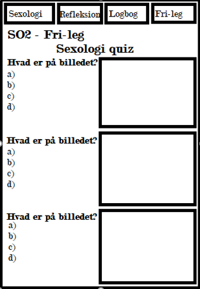

SO 2 - Noter
Her vil jeg gerne skrive hvilke forventninger og ideer vi havde i første omgang. Og jeg vil gerne sige med det samme, at det arbejde, der kom ud i sidste ende, ikke lever op til vores oprindelige forventninger. Den største forskel er designet. Vi arbejdede med designet af webstedet fra bunden, det vil sige, at vi ikke havde en webstedsskabelon. Og det er grunden til, at vi nogle gange ikke formåede at lave designet, som vi gerne ville. På grund af dette ser siden lidt underudviklet ud. Vi planlagde oprindeligt at skabe et design (baggrund, fotos og spil), der matchede hovedtemaet, som er Sexologi, og faktisk passede resultatet ganske godt til ideen. Vi skal helt klart arbejde mere med designet – det er meget interessant, men det får dig samtidig til at tænke over koden.

Det gode ved at arbejde med siden var, at alle i gruppen havde samme mening, hvilket ikke førte til problemer, mens vi lavede designet og skrev programmerings- og danskdelen.
SO 2 - Opgaver
Her vil jeg gerne fortælle dig, hvilken information vi har skrevet på vores hjemmeside. Den første side (den første knap i menuen "Sexologi") er både introduktionen til hovedemnet - Sexologi, og begyndelsen på den videnskabelige del af siden. På denne side har vi skrevet for at gøre det klart for 1g'er, at sexologi er et vigtigt emne for unge. Vi skrev om de vigtigste specialer inden for sexologi, det vil sige menstruation, graviditet og alle former for prævention. Vores første side er tilsluttet til næstsidste side (næstsidste knap i menuen "Fri-leg"), hvor spilleren skal vælge det passende svar på det viste billede. Billederne viser de former for prævention, som er beskrevet indledningsvis. På anden side lavede vi en detaljeret analyse af biologiteksten ved hjælp af forskellige metoder. Vi lavede også en "Logbog" knap, hvor vi dagligt optog, hvad vi lavede, og herunder skrev vi en selvrefleksion om projektet. Vi har lavet den sidste side som er "Litteraturliste", så læseren ved, hvor vi har informationerne og billederne fra.